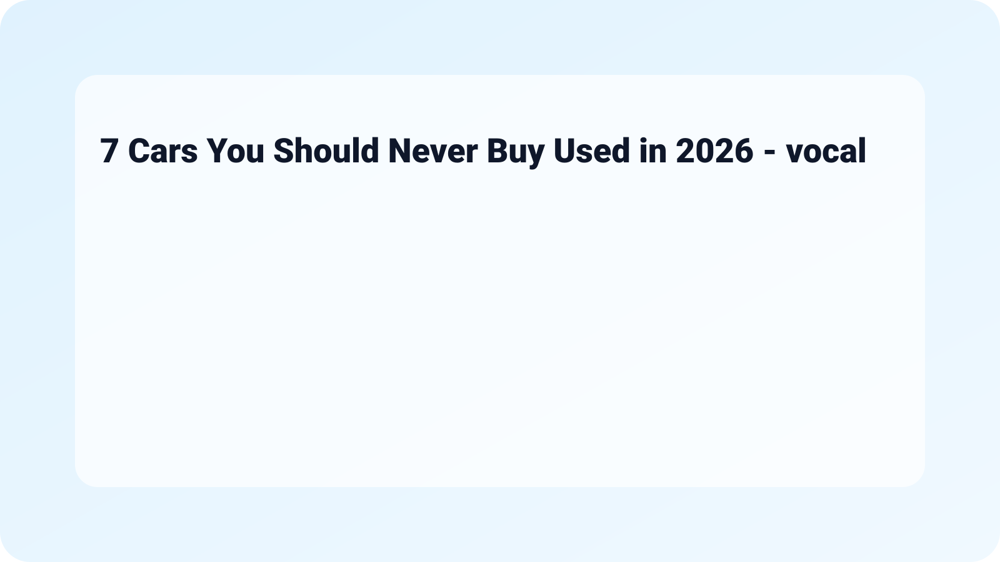

7 Cars You Should Never Buy Used in 2026
When considering a used car purchase, it is crucial to be aware of the vehicles that may come with a host of problems. In this guide, we will discuss the 7 Cars You Should Never Buy Used in 2026 - vocal.media, shedding light on specific models known for their reliability issues, costly repairs, and other risks that could lead to buyer's remorse.
What Happened
In recent years, certain car models have drawn negative attention due to recalls, poor performance, or high maintenance costs. As these vehicles age, the defects may become more pronounced, making them less than ideal for those looking for dependable transportation.
Why It Matters
Understanding which used cars to avoid can save potential buyers from headaches and financial strain. Choosing the right car is vital not just for your wallet, but also for your safety and peace of mind while driving.
Quick Checklist
- Research reliability ratings before buying.
- Examine recall history and required repairs.
- Check consumer reviews about specific models.
- Consider total cost of ownership, including insurance and maintenance.
- Get a third-party inspection before purchasing.
Top 7 Cars to Avoid
Here are the seven cars that you should steer clear of if you’re on the market for a used vehicle in 2026:
1. Chrysler 200
The Chrysler 200 has faced significant criticism over its transmission issues, which can result in costly fixes. Owners have reported frequent stalling and transmission failure, making it a risky buy for any potential used car owner.

2. Ford Fiesta
While compact and fuel-efficient, the Ford Fiesta is notorious for its problematic PowerShift dual-clutch transmission. Many users have reported excessive shaking, failure to accelerate, and more, impacting driver safety and enjoyment.

3. Nissan Altima
Older Nissan Altima models have garnered attention for a slew of engine problems, especially related to their CVT (Continuously Variable Transmission). The high repair costs associated with these issues make this vehicle a questionable choice.

4. Volkswagen Jetta
Although the Volkswagen Jetta has a loyal following for its sharp design and interior quality, the turbocharged engine versions can face substantial reliability problems. Issues can include oil consumption and electrical system failures, leading to frequent visits to the mechanic.

5. Chevrolet Equinox
The Chevrolet Equinox has been flagged for its poor engine performance and excessive oil consumption. Buyers of used models often experience expensive repairs, leading to dissatisfaction and regret.

6. Jeep Cherokee
While the Jeep brand is celebrated for its off-road capabilities, the Cherokee has faced numerous issues, particularly with its engine and transmission reliability. This uncertainty can make used models a risky investment.

7. Dodge Dart
The Dodge Dart was intended to attract a younger audience but has faltered due to major reliability concerns and a lack of customer support. Its poor reviews and known defects render it unwise to purchase a used model.
Practical Tips for Buying Used Cars
Here are some practical tips to keep in mind when shopping for used cars:
- Do your research: Utilize resources like Consumer Reports or J.D. Power for information on reliability ratings.
- Perform a VIN check: Discover any past accidents or recalls associated with the car's history.
- Test drive: Always take a thorough test drive to assess the vehicle's performance and comfort level.
- Ask for a mechanic’s inspection: It can be invaluable to have an expert analyze the car before finalizing your purchase.
- Negotiate: Use your research to negotiate a better price, especially if you uncover any issues.
FAQ
What should I look for in a used car?
Prioritize reliability ratings, vehicle history, and your personal preferences for features. Also, ensure you check for any outstanding recalls.
How can I know if a car is a good deal?
Research market prices for the specific make and model you're interested in, and compare it against the condition and mileage of the car.
Are all older cars bad choices?
No, some older cars may still be reliable if they have been well-maintained. Always do thorough research on specific models.
Should I consider extended warranties on used cars?
Extended warranties can provide peace of mind, especially on models with known issues. Evaluate the cost versus your financial comfort level.
Where can I find out about recalls on my car?
You can check the National Highway Traffic Safety Administration (NHTSA) website to look up information about recalls based on the Vehicle Identification Number (VIN).
Related on MingMong: 2026: Missing student's family 'continue to keep hope alive' and The Carry-Less Travel Kit Everyone in Their 20s Is Switching To
Source: Link